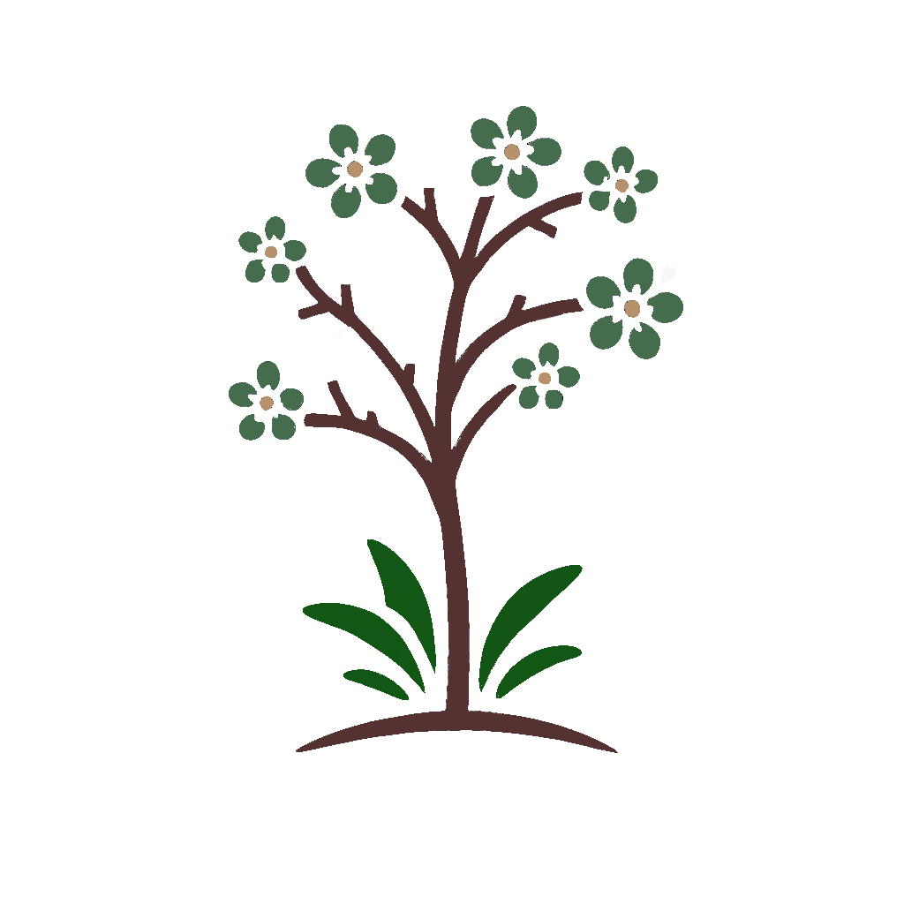

Pépinières Kaiser Merryl
Pépinières Kaiser Merryl
Confracourt & Rupt-sur-Saône

Production locale de plantes en Haute-Saône
Quatrième génération de pépiniéristes, les Pépinières Kaiser Merryl produisent des arbustes à fleurs, persistants, nains, conifères, arbres tiges, fruitiers, petits fruits et vivaces.
Vente sur les marchés et foires locales
Mardi – Champlitte | 8h30 – 12h30
1er & 3e vendredi du mois – Lavoncourt | 8h30 – 12h30
Samedi – Scey-sur-Saône | 8h30 – 12h30
Conseils & aménagement paysager
Besoin d’aide pour vos plantations ? Nous créons des jardins adaptés à votre terrain, vos goûts et vos besoins.
Contact
📍 5 rue de Vauconcourt, 70120 Confracourt
✉️ merryl.kaiser@hotmail.fr
📱 06 77 86 64 82